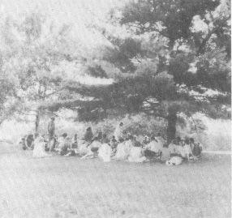

SATSANG

Ramakrishna points out that when a tree is very small we protect it by surrounding it with a fence so that animals do not step on it. Later when the tree is bigger it no longer needs the fence. Then it can give shelter to many.
So it is with the spiritual growth. At the outset, just after we have begun to awaken to the possibility of living in the Spirit, we are vulnerable, for our faith is shaky. At this stage in our development it is important that we surround ourselves with other beings who share our faith in the Spirit. This is called satsang, or sangha—the community of monks on the path. And it is for this reason that there are such things as monasteries or ashrams. During this stage it is well to be with people who wish to discuss only ways and means of realizing enlightenment.
The progression is quite inevitable. After some time on the path of awakening, the type of associates you share time with changes. Finally you realize that except for existing karmic commitments—such as familial or societal commitments—there is no reason to spend time with anyone except as an aid to one’s sadhana. So all new relationships, be they friendships, roommates, marriages, business partnerships, take on implicitly, and finally explicitly, this contractual basis.
When your center is firm, when your faith is strong and unwavering, then it will not matter what company you keep. Then you will see that all beings are on the evolutionary journey of consciousness. They differ only to the degree that the veil of illusion clouds their vision. But for you . . . you will see behind the veil to the place where we are all ONE.
Potent Quotes
“Our friends found us becoming dull. Gurdjieff said, ‘There is worse to come . . . he is an interesting man who lies well . . . you have already begun to die. It is a long way yet to complete death but still a certain amount of silliness is going out of you. You can no longer deceive yourselves as sincerely as you did before. You have now got the taste of truth.’ ”—Ouspensky
“Bad company is loss, and good company is gain; . . . In company with the wind the dust flies heavenwards; if it joins water, it becomes mud and sinks.”—Tulsi Das
“When going through spiritual exercises (sadhana) do not associate with those who never concern themselves with matters spiritual. Such people scoff at those who worship God and meditate upon Him and they ridicule piety and the pious. Keep yourself far aloof from them.”—Ramakrishna
“I must now whisper very unceasingly I was not born separate from you.” / Gv